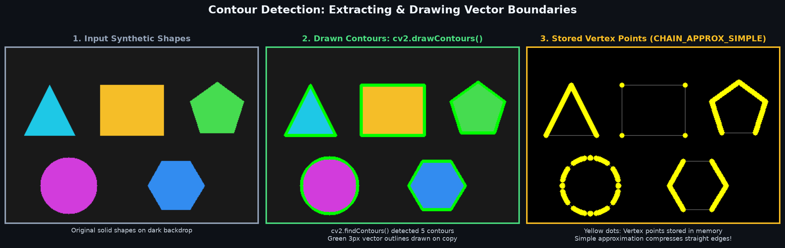
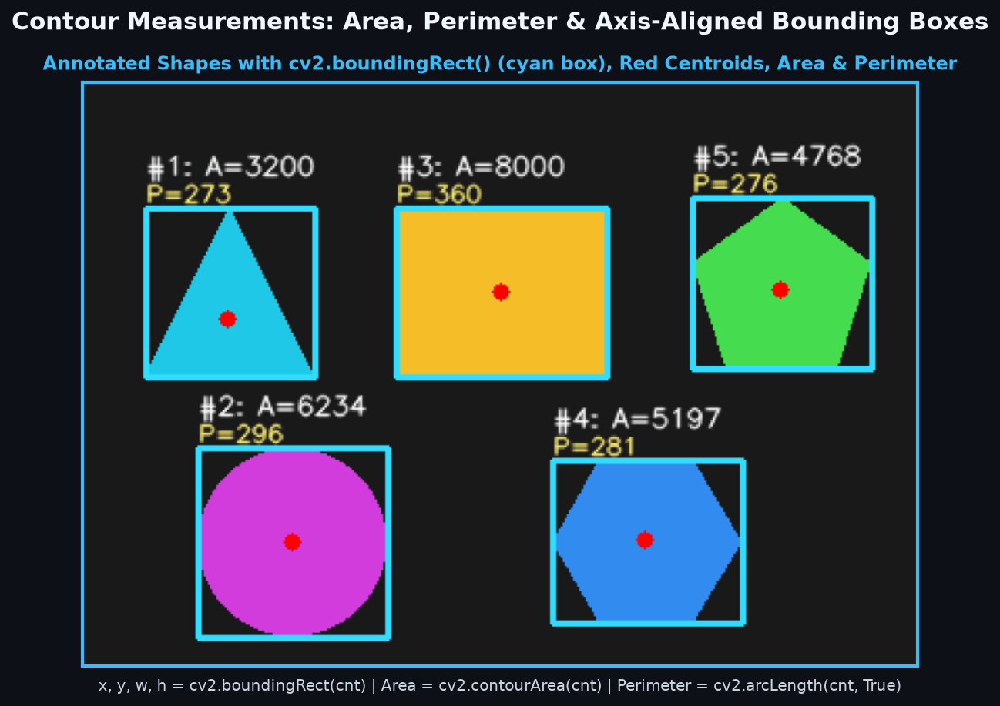
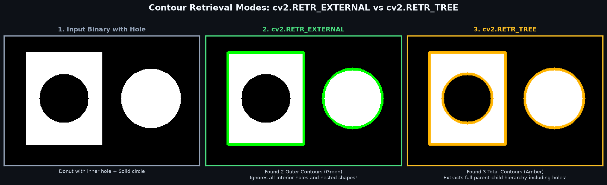
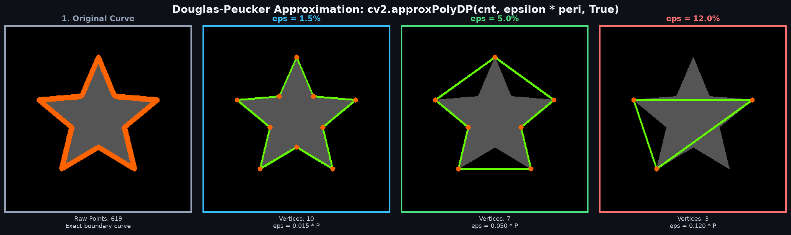
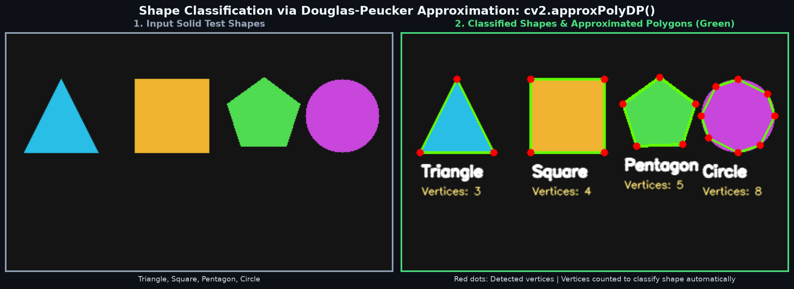

Image processing mein edges sirf scattered boundary pixels hote hain, jabki Contours unhi pixels ko jodkar ek continuous closed vector curve banate hain. Seekhein kaise objects ko count karein, area calculate karein, bounding box banayein aur geometric shapes detect karein!
Bahut se beginners Edges aur Contours mein confuse hote hain:
| Feature | Edge (Kinaara) | Contour (Ghera / Vector Curve) |
|---|---|---|
| Definition | Pixels jahan color ya intensity mein sudden jump hota hai (Gradient peaks). | Ek hi intensity ya color ke boundary points ko jodti hui continuous boundary curve. |
| Output Format | Raster binary image (0 aur 255 pixels ki grid). | Python List of NumPy point arrays [(x1, y1), (x2, y2), ...]. |
| Object Awareness | Nahi hoti. Edges tooti-phooti ya disconnected ho sakti hain. | Hoti hai! Har distinct object ka apna alag discrete contour curve hota hai. |
| Calculations | Direct Area ya Perimeter nikaalna mushkil hai. | Direct contourArea(), arcLength(), centroid aur shape match possible hai. |
cv2.findContours() hamesha Black Background (0) par White Object (255) dhoondhta hai. Agar aapki image mein object black hai aur background white, to pehle use cv2.bitwise_not() ya binary inverted thresholding se invert karna zaroori hai!

OpenCV mein contours extract karne ke liye do primary functions use hote hain:
cv2.findContours(image, mode, method)Ye function binary image ko scan karke discrete point arrays nikaalta hai:
contours, hierarchy = cv2.findContours(binary_img, cv2.RETR_EXTERNAL, cv2.CHAIN_APPROX_SIMPLE)cv2.findContours() 3 values return karta tha (image, contours, hierarchy). Par modern OpenCV 4.x mein ye sirf 2 values return karta hai: (contours, hierarchy). 3 values unpack karne par ValueError: too many values to unpack exception aayegi!
cv2.drawContours(image, contours, contourIdx, color, thickness)image: Destination image jispar boundary draw karni hai (usually original 3-channel color image).contours: findContours se aayi hui contour points ki Python list.contourIdx: Kaunsa contour draw karna hai? -1 pass karne par sabhi contours ek saath draw ho jate hain. Specific shape ke liye index pass karein (jaise 0 ya 1).color: BGR tuple (jaise green ke liye (0, 255, 0)).thickness: Line ki motai in pixels. Agar -1 ya cv2.FILLED pass karenge to poora shape solid fill ho jayega!CHAIN_APPROX_NONE vs CHAIN_APPROX_SIMPLEContour nikaalte waqt points store karne ke do main methods hain:
cv2.CHAIN_APPROX_NONEBoundary ke har ek pixel coordinate ko list mein save karta hai. Agar ek rectangle 200×200 pixels ka hai, to ye approx 800 discrete points store karega. High memory consumption!
cv2.CHAIN_APPROX_SIMPLE ★Horizontal, vertical aur diagonal segments ko compress kar deta hai aur sirf corners / endpoints store karta hai. 200×200 rectangle ke liye sirf 4 points store hote hain! Highly optimized!
import cv2
import numpy as np
# 1. Grayscale image load karein
img = cv2.imread('shapes.png')
gray = cv2.cvtColor(img, cv2.COLOR_BGR2GRAY)
# 2. Binary thresholding (foreground white 255, background black 0)
_, binary = cv2.threshold(gray, 127, 255, cv2.THRESH_BINARY)
# 3. Contours extract karein (OpenCV 4+ style)
contours, hierarchy = cv2.findContours(binary, cv2.RETR_EXTERNAL, cv2.CHAIN_APPROX_SIMPLE)
print(f"Kul mile {len(contours)} alag-alag objects!")
# 4. Saare contours ko Green color (0, 255, 0) mein draw karein
output = img.copy()
cv2.drawContours(output, contours, -1, (0, 255, 0), 2)
cv2.imshow('Contours Detected', output)
cv2.waitKey(0)
cv2.destroyAllWindows()Ek baar contour array mil jane ke baad hum uski physical properties calculate kar sakte hain:
cv2.contourArea(cnt): Shape ke andar kitne square pixels hain. Tiny noise specks ko filter out karne ke liye useful hai (e.g. if area > 100: ...).
cv2.arcLength(cnt, closed=True): Boundary ki total linear length. Closed curve ke liye closed=True pass karein.
M = cv2.moments(cnt) se spatial moments milte hain:
cx = int(M['m10'] / M['m00'])
cy = int(M['m01'] / M['m00'])
x, y, w, h = cv2.boundingRect(cnt): Object ke around upright straight bounding box ka top-left corner aur width-height nikaalta hai.

for i, cnt in enumerate(contours):
# Area aur Perimeter calculate karein
area = cv2.contourArea(cnt)
perimeter = cv2.arcLength(cnt, True)
# Spatial moments se centroid nikaalein
M = cv2.moments(cnt)
if M['m00'] != 0:
cx = int(M['m10'] / M['m00'])
cy = int(M['m01'] / M['m00'])
# Centroid par red dot banayein
cv2.circle(output, (cx, cy), 4, (0, 0, 255), -1)
# Straight bounding rectangle nikaalein
x, y, w, h = cv2.boundingRect(cnt)
cv2.rectangle(output, (x, y), (x + w, y + h), (255, 255, 0), 2)
print(f"Shape #{i}: Area={area:.1f}, Peri={perimeter:.1f}, Center=({cx}, {cy})")Real-world images mein objects ke andar holes ho sakte hain (jaise coin ke beech ka hole, donut, washer, ya alphabets 'O', 'B', 'P'). OpenCV mein parent-child relations ko handle karne ke liye Retrieval Modes hote hain:
| Mode Flag | Hierarchy Behavior | Best Use Case |
|---|---|---|
cv2.RETR_EXTERNAL |
Sirf sabse bahar ke extreme outer contours dhoondhta hai. Holes ko ignore karta hai! | Object counting, boundary outline, document border detection. |
cv2.RETR_TREE |
Poora complete hierarchical tree reconstruct karta hai (parents, children, grandchildren). | Complex shapes with inner cutouts, nested text OCR, washer hole inspection. |
cv2.RETR_LIST |
Saare contours extract karta hai bina kisi parent-child relationship ke (flat list). | Jab nested hierarchy ka structure matter nahi karta par har boundary chahiye. |
cv2.RETR_CCOMP |
2-level hierarchy banata hai: Outer boundaries (level 1) aur Holes (level 2). | Simple hole-vs-outer separation bina deeply nested levels ke. |

(1, N, 4) hota hai, jisme har contour ke liye 4 values hoti hain:[Next, Previous, First_Child, Parent]-1 hoti hai!
Jab camera se koi shape capture hota hai, to pixels ki rough edges ki wajah se contour curve mein hazaron points ho sakte hain. cv2.approxPolyDP() Douglas-Peucker algorithm use karke is curve ko smooth straight lines wale simple polygon mein convert karta hai!
Epsilon maximum distance threshold define karta hai. Curve ka jo point approximated segment se ε se zyada door hoga, use naye vertex ke roop mein add kiya jayega:

Contour approximation ke baad hum len(approx) (number of vertices) se shapes detect aur classify kar sakte hain:
| Vertices Count | Identified Shape | Classification Logic & Checks |
|---|---|---|
| 3 Vertices | Triangle (Tribhuj) | len(approx) == 3 |
| 4 Vertices | Square ya Rectangle |
aspect_ratio = float(w) / hAgar 0.95 <= aspect_ratio <= 1.05 to Square, warna Rectangle.
|
| 5 Vertices | Pentagon (Panchbhuj) | len(approx) == 5 |
| > 6 Vertices | Circle / Oval |
Circularity Formula: 4 * π * Area / (Perimeter2)Agar Circularity > 0.75 hai, to shape Circle hai! |

import cv2
import numpy as np
def classify_shapes(image_path):
img = cv2.imread(image_path)
gray = cv2.cvtColor(img, cv2.COLOR_BGR2GRAY)
_, thresh = cv2.threshold(gray, 127, 255, cv2.THRESH_BINARY)
contours, _ = cv2.findContours(thresh, cv2.RETR_EXTERNAL, cv2.CHAIN_APPROX_SIMPLE)
for cnt in contours:
# Ignore noise
if cv2.contourArea(cnt) < 100:
continue
peri = cv2.arcLength(cnt, True)
approx = cv2.approxPolyDP(cnt, 0.035 * peri, True)
num_vertices = len(approx)
x, y, w, h = cv2.boundingRect(cnt)
shape_name = "Unknown"
if num_vertices == 3:
shape_name = "Triangle"
elif num_vertices == 4:
aspect_ratio = float(w) / h
shape_name = "Square" if 0.95 <= aspect_ratio <= 1.05 else "Rectangle"
elif num_vertices == 5:
shape_name = "Pentagon"
else:
shape_name = "Circle"
# Draw outline and label
cv2.drawContours(img, [cnt], -1, (0, 255, 0), 2)
cv2.putText(img, shape_name, (x, y - 10), cv2.FONT_HERSHEY_SIMPLEX, 0.6, (255, 0, 0), 2)
return imgContours computer vision pipelines ka backbone hain. Ye practical applications dekhein:
CamScanner jaise apps table par rakhe document ke 4 corners detect karne ke liye findContours + approxPolyDP (vertices == 4) use karte hain, aur fir perspective transform se seedha scan generate karte hain!
Bank sorting machines har coin ka area (contourArea) measure karke instant pata laga leti hain ki coin ₹1, ₹2, ₹5 ya ₹10 ka hai aur total cash count karti hain!
Manufacturing lines par bottles ke caps ya metal washers ke holes ka area aur circularity check ki jaati hai. Agar circularity < 0.70 hai to defective part reject ho jata hai.
Hand contours nikaalkar Convex Hull aur Convexity Defects calculate kiye jaate hain, jisse uthi hui ungliyon ki ginti hoti hai (Thumbs up, Victory sign, Fist)!
findContours mein pass karnacv2.error: (-210:Unsupported format or combination of formats) crash aayega.cv2.cvtColor(img, cv2.COLOR_BGR2GRAY) karein aur fir cv2.threshold() ya cv2.Canny() se 8-bit single-channel binary image banayein!
cv2.bitwise_not() ya cv2.THRESH_BINARY_INV se black foreground ko white banayein!
cx = int(M['m10'] / M['m00']) mein jab M['m00'] == 0 ho to ZeroDivisionError aayega.if M['m00'] != 0: ...
cv2.findContours() kitni values return karta hai?(contours, hierarchy) return kiya jata hai!
RETR_EXTERNAL sirf outermost parent boundaries return karta hai aur internal child cutouts/holes ko discard kar deta hai!
cv2.drawContours(img, contours, -1, (0, 255, 0), 2) mein -1 ka kya matlab hai?contourIdx = -1 OpenCV ka special flag hai jo list ke sabhi contours ko ek loop ke bina canvas par draw kar deta hai!
Ab jab humne shapes aur geometric objects ko isolate aur classify karna seekh liya hai, agle topic mein hum seekhenge ki kaise Image Histograms ki madad se lighting distribution analyse karte hain aur Histogram Equalization (CLAHE) se low-contrast, andheri images ko crystal clear banate hain!